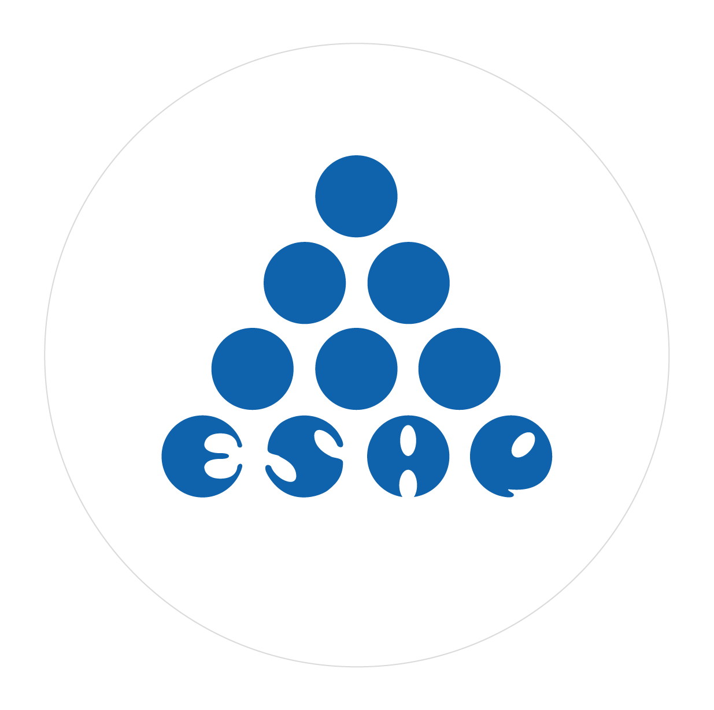

| Período | Autor / Civilización | Aporte Principal |
|---|---|---|
| 3000 a.C. | Mesopotamia / Egipto | Censos de ganado, granos y población para administrar el Estado |
| 2000 a.C. | China Imperial | Primer censo de población ordenado por el Emperador Yao |
| Siglo I a.C. | Imperio Romano | Institutionalización del census: ciudadanos, propiedades y riqueza |
| 1654 d.C. | Pascal y Fermat | Fundamentos del cálculo de probabilidades |
| 1662 | John Graunt | Primer análisis estadístico moderno: mortalidad en Londres |
| Siglo XIX | Gauss, Quetelet, Galton | Distribución normal, correlación y estadística social |
| 1900 - 1950 | Fisher, Pearson | Diseño experimental, ANOVA, inferencia estadística formal |
| 1950 - 2000 | Era computacional | Software estadístico, bases de datos y muestreo avanzado |
| Siglo XXI | Big Data / IA | Estadística aplicada a machine learning e inteligencia artificial |

Asignatura: Estadística
Docente: Dagoberto Salgado Horta
Institución: Esap
Fecha de entrega: mayo de 2026
1 Historia de la Estadística
1.1 Origen de la Estadística
La palabra estadística proviene del latín status, que significa “estado” o “situación”. Su origen está estrechamente ligado a la necesidad de los gobiernos de conocer y controlar los recursos de sus territorios: poblaciones, tierras, riquezas y ejércitos.
Desde las civilizaciones más antiguas, el ser humano ha sentido la necesidad de contar, clasificar y organizar información para tomar decisiones. Lo que hoy llamamos estadística nació de esa necesidad práctica de gobernar y administrar.
1.2 Aportes de las Civilizaciones Antiguas
Mesopotamia y Egipto (3000 a.C. - 500 a.C.)
Los sumerios realizaban censos de ganado y granos para organizar el tributo. Los egipcios llevaban registros detallados de la producción agrícola a orillas del Nilo y usaban datos para planificar la construcción de las pirámides.
China (2000 a.C.)
El emperador Yao ordenó los primeros censos de población para conocer cuántos hombres podían trabajar y servir en el ejército.
Roma (siglo I a.C.)
El Imperio Romano institucionalizó el census, un registro periódico de ciudadanos, propiedades y riqueza. Este fue uno de los sistemas estadísticos más avanzados de la antigüedad.
Grecia Clásica
Filósofos como Aristóteles reconocieron la importancia de la recolección sistemática de datos para el análisis político y social.
1.3 Evolución en la Edad Moderna
Siglos XVII y XVIII — Nacimiento de la Estadística Matemática
Con el desarrollo del cálculo de probabilidades por parte de Blaise Pascal y Pierre de Fermat (1654), la estadística adquirió bases matemáticas sólidas. John Graunt publicó en 1662 Natural and Political Observations upon the Bills of Mortality, considerado el primer trabajo estadístico moderno, analizando tasas de mortalidad en Londres.
Siglo XIX — Estadística Descriptiva e Inferencial
Carl Friedrich Gauss desarrolló el método de mínimos cuadrados y describió la distribución normal. Adolphe Quetelet aplicó métodos estadísticos a las ciencias sociales, creando el concepto del “hombre promedio”. Francis Galton introdujo conceptos como correlación y regresión.
Siglo XX — Era Moderna
Ronald A. Fisher revolucionó la estadística con el diseño experimental y el análisis de varianza (ANOVA). Karl Pearson formalizó el coeficiente de correlación. La estadística se convirtió en herramienta fundamental para ciencias naturales, sociales y económicas.
1.4 Importancia en la Actualidad
En el siglo XXI, la estadística es el fundamento del análisis de datos, la inteligencia artificial y la toma de decisiones en todos los sectores. En el ámbito público, es indispensable para diseñar políticas, medir el desempeño del Estado y garantizar el uso eficiente de los recursos.
1.5 Línea de Tiempo de la Estadística
2 Conceptos Fundamentales de la Estadística
2.1 Estadística Descriptiva
Definición: Rama de la estadística que se ocupa de recolectar, organizar, resumir y presentar datos de forma clara y comprensible, sin ir más allá de los datos observados.
Sus principales herramientas son: tablas de frecuencia, gráficos, medidas de tendencia central (media, mediana, moda) y medidas de dispersión (varianza, desviación estándar).
Ejemplo en administración pública:
La Alcaldía de Pasto elabora un informe anual con el promedio de quejas ciudadanas recibidas por dependencia, el porcentaje de trámites resueltos en menos de 5 días y un histograma de los tiempos de respuesta. Todo esto es estadística descriptiva: describe lo que ocurrió sin hacer proyecciones.
2.2 Estadística Inferencial
Definición: Rama de la estadística que permite, a partir de una muestra, hacer generalizaciones o conclusiones sobre una población más amplia, con un determinado nivel de confianza y margen de error.
Utiliza herramientas como intervalos de confianza, pruebas de hipótesis y modelos de regresión.
Ejemplo en administración pública:
El DANE encuesta a 10.000 hogares de Colombia para estimar la tasa de pobreza multidimensional de todo el país (aproximadamente 50 millones de personas). A partir de esa muestra, infiere el comportamiento de la población total con un margen de error del ±2%.
2.3 Población
Definición: Conjunto completo de elementos, individuos u objetos que comparten una o más características comunes y sobre los cuales se desea obtener información.
Ejemplo en administración pública:
Para evaluar la satisfacción con el servicio de acueducto en Pasto, la población sería el total de hogares con conexión domiciliaria al sistema de acueducto municipal, es decir, todos los usuarios registrados.
2.4 Muestra
Definición: Subconjunto representativo de la población, seleccionado mediante un procedimiento definido, que permite obtener información válida sin necesidad de estudiar a todos los elementos.
Ejemplo en administración pública:
Para la misma evaluación del acueducto, en lugar de encuestar a los 80.000 hogares conectados, se seleccionan aleatoriamente 400 hogares distribuidos por barrios. Esa selección es la muestra.
2.5 Parámetro
Definición: Medida numérica que describe una característica de la población. Es un valor fijo (aunque generalmente desconocido) que se intenta estimar a través de la muestra.
Ejemplo en administración pública:
El ingreso promedio real de todos los empleados públicos de Nariño es un parámetro. No se conoce exactamente a menos que se consulte a cada uno de ellos, pero existe como valor verdadero.
2.6 Estadístico
Definición: Medida numérica calculada a partir de los datos de una muestra. Se utiliza para estimar el parámetro correspondiente de la población.
Ejemplo en administración pública:
Si se encuesta a 200 empleados públicos de Nariño y se calcula su ingreso promedio, ese resultado es un estadístico. Se usa para aproximarse al parámetro real (ingreso promedio de toda la población de empleados).
2.7 Muestreo
Definición: Proceso mediante el cual se seleccionan los elementos que formarán parte de la muestra. Existen diferentes tipos: muestreo aleatorio simple, estratificado, por conglomerados, sistemático, entre otros.
Ejemplo en administración pública:
Para evaluar el programa de subsidios de vivienda en el departamento de Nariño, el gobierno utiliza muestreo estratificado: divide los beneficiarios por municipio (estratos) y selecciona aleatoriamente un porcentaje de cada uno, garantizando que todos los municipios estén representados.
2.8 Sesgo
Definición: Error sistemático que ocurre cuando el proceso de recolección de datos o el diseño del estudio favorece ciertos resultados sobre otros, produciendo estimaciones que no reflejan la realidad de la población.
Ejemplo en administración pública:
Si para medir la satisfacción con los servicios de salud pública solo se encuesta a pacientes que asistieron voluntariamente a una jornada de socialización, los resultados estarán sesgados: es probable que quienes asistieron tengan una opinión más favorable que el ciudadano promedio que no asiste a ese tipo de eventos.
3 Variables Estadísticas
3.1 Concepto de Variable
En estadística, una variable es cualquier característica, atributo o propiedad de un individuo u objeto que puede tomar diferentes valores o categorías entre los elementos de una población o muestra.
Las variables son el objeto de medición y análisis en cualquier estudio estadístico. Según su naturaleza y la forma en que pueden medirse, se clasifican en cualitativas y cuantitativas.
3.2 Clasificación según su Naturaleza
3.2.1 Variables Cualitativas
Son aquellas que expresan categorías o atributos y no se representan con números con significado matemático. Se subdividen en:
- Nominales: Las categorías no tienen orden entre sí. Ejemplo: tipo de entidad pública (alcaldía, gobernación, ministerio).
- Ordinales: Las categorías tienen un orden o jerarquía natural. Ejemplo: nivel de satisfacción (bajo, medio, alto).
3.2.2 Variables Cuantitativas
Son aquellas que se expresan numéricamente y admiten operaciones matemáticas. Se subdividen en:
- Discretas: Solo toman valores enteros o contables. Ejemplo: número de empleados en una entidad.
- Continuas: Pueden tomar cualquier valor dentro de un rango, incluyendo decimales. Ejemplo: presupuesto ejecutado en millones de pesos.
3.3 Escalas de Medición
| Escala | Características | Operaciones permitidas |
|---|---|---|
| Nominal | Categorías sin orden ni magnitud | Conteo, moda |
| Ordinal | Categorías con orden, sin distancia definida | Conteo, mediana, moda |
| Intervalo | Distancias iguales entre valores, sin cero absoluto | Media, desviación estándar |
| Razón | Como intervalo, pero con cero absoluto real | Todas las operaciones matemáticas |
3.4 Tabla de Clasificación de Variables
| Variable | Tipo | Naturaleza | Escala de Medición | Ejemplo en Administración Pública | Justificación |
|---|---|---|---|---|---|
| Tipo de cargo público | Cualitativa | Nominal | Nominal | Alcalde, secretario, inspector, asesor | No existe orden entre los cargos; son categorías sin jerarquía estadística |
| Nivel de satisfacción ciudadana | Cualitativa | Ordinal | Ordinal | Muy insatisfecho / insatisfecho / satisfecho / muy satisfecho | Hay orden (muy insatisfecho < satisfecho), pero la diferencia entre niveles no es constante |
| Estrato socioeconómico | Cualitativa | Ordinal | Ordinal | Estrato 1 < estrato 2 < estrato 3 (sin distancias iguales) | Los estratos indican jerarquía pero la diferencia entre 1-2 no equivale a 2-3 |
| Número de quejas recibidas | Cuantitativa | Discreta | Razón | Una alcaldía recibió 45 quejas en enero de 2026 | Se cuentan en números enteros; tiene cero absoluto (0 quejas = ninguna queja) |
| Presupuesto ejecutado (millones $) | Cuantitativa | Continua | Razón | El municipio ejecutó $3.250 millones en inversión social | Puede tomar decimales; el cero absoluto significa ausencia de ejecución |
| Temperatura en instalaciones | Cuantitativa | Continua | Intervalo | La temperatura promedio en las oficinas es de 22,5°C | Las diferencias son constantes pero el cero es arbitrario (0°C no es ausencia de temperatura) |
| Género del funcionario | Cualitativa | Nominal | Nominal | Masculino, femenino, no binario | Son categorías sin ningún orden matemático entre sí |
| Porcentaje de cobertura en salud | Cuantitativa | Continua | Razón | El municipio tiene 78,4% de cobertura en atención primaria | Permite decimales y comparaciones proporcionales; cero = cobertura nula |
| Antigüedad en el cargo (años) | Cuantitativa | Discreta | Razón | El funcionario lleva 7 años en el cargo | Se mide en años enteros; el cero real implica recién vinculado |
| Índice de Desarrollo Humano (IDH) | Cuantitativa | Continua | Razón | El IDH de Nariño es 0,712 (año 2024) | Índice continuo con cero absoluto; permite comparaciones entre regiones |
4 Aplicaciones en la Administración Pública
La estadística es una herramienta de gobernanza. Sin datos confiables y bien analizados, la gestión pública se vuelve improvisada e ineficiente. A continuación se presentan cuatro aplicaciones concretas.
4.1 Indicadores de Gestión
Los indicadores de gestión son medidas cuantitativas que permiten evaluar el desempeño de una entidad pública frente a sus metas. Se construyen a partir de datos estadísticos recolectados periódicamente.
Ejemplo práctico:
La Secretaría de Hacienda de Nariño mide mensualmente el porcentaje de ejecución presupuestal:
\text{Indicador} = \frac{\text{Presupuesto ejecutado}}{\text{Presupuesto total aprobado}} \times 100
Si al mes de marzo se han ejecutado $12.000 millones de un presupuesto de $50.000 millones, el indicador es del 24%. La estadística descriptiva permite comparar este valor con años anteriores y con municipios similares.
4.2 Evaluación de Políticas Públicas
Antes de ampliar, modificar o eliminar una política pública, es necesario evaluarla con rigor estadístico. Se utilizan grupos de control, encuestas de impacto y análisis de regresión.
Ejemplo práctico:
El gobierno departamental implementó un programa de microcréditos para pequeños comerciantes. Para evaluar su impacto, compara los ingresos promedio de los beneficiarios (grupo tratamiento) con los de comerciantes similares que no accedieron al programa (grupo control). Una prueba de hipótesis estadística permite determinar si la diferencia en ingresos es estadísticamente significativa o se debe al azar.
4.3 Análisis de Pobreza
El DANE y el DNP utilizan encuestas como la Gran Encuesta Integrada de Hogares (GEIH) para medir la pobreza monetaria y el Índice de Pobreza Multidimensional (IPM) en Colombia.
Ejemplo práctico:
El IPM combina 15 indicadores agrupados en 5 dimensiones (condiciones educativas, de la niñez, trabajo, salud y vivienda). Para Nariño, el análisis estadístico de estos indicadores permite identificar qué privaciones son más frecuentes y en qué municipios, orientando la inversión social hacia donde más se necesita.
Una tabla de distribución de frecuencias de las privaciones por municipio permite visualizar rápidamente dónde se concentra la pobreza y qué tipo de intervención requiere cada territorio.
4.4 Cobertura en Salud y Educación
La estadística permite monitorear si los servicios básicos están llegando efectivamente a la población.
Ejemplo práctico — Salud:
El Ministerio de Salud calcula la tasa de cobertura de vacunación por municipio:
\text{Tasa de cobertura} = \frac{\text{Niños vacunados}}{\text{Niños en edad de vacunación}} \times 100
Si en un municipio hay 1.200 niños entre 0 y 5 años y solo 840 están vacunados, la cobertura es del 70%. La estadística inferencial permite proyectar si la tendencia actual llevará o no a alcanzar la meta nacional del 95% antes de fin de año.
Ejemplo práctico — Educación:
La Secretaría de Educación analiza la tasa de deserción escolar por grado y por zona (urbana/rural). Con estos datos, diseña programas de permanencia escolar focalizados en los grados y territorios con mayor riesgo de abandono.
5 Referencias
- Triola, M. F. (2018). Estadística (13.ª ed.). Pearson Educación.
- Walpole, R. E., Myers, R. H., Myers, S. L., & Ye, K. (2012). Probabilidad y estadística para ingeniería y ciencias (9.ª ed.). Pearson.
- DANE. (2023). Gran Encuesta Integrada de Hogares (GEIH). Departamento Administrativo Nacional de Estadística. https://www.dane.gov.co
- DNP. (2022). Índice de Pobreza Multidimensional - Resultados 2022. Departamento Nacional de Planeación. https://www.dnp.gov.co
- Stigler, S. M. (1986). The History of Statistics: The Measurement of Uncertainty before 1900. Harvard University Press.